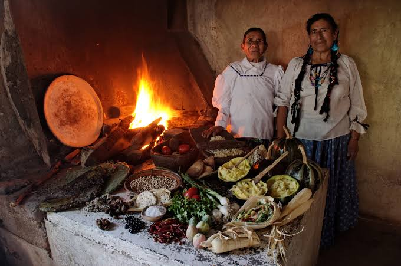

Pozole

Más allá del sabor: los secretos de la cocina mexicana México es conocido por su increíble gastronomía, pero detrás de muchos de sus platillos más famosos existen historias que pocos conocen. Lo que hoy disfrutamos en nuestra mesa alguna vez tuvo un significado muy diferente, ligado a antiguas civilizaciones, ceremonias, ingredientes inesperados y tradiciones que han pasado de generación en generación. ¿Sabías que el pozole tiene antecedentes prehispánicos relacionados con ceremonias rituales? ¿O que los tamales, el mole y las sopas tradicionales guardan secretos sobre la manera en que nuestros antepasados aprovechaban los ingredientes y creaban sabores únicos? En este recorrido descubriremos los fascinantes orígenes del pozole, la sopa azteca, los tamales y el mole, explorando sus leyendas, su evolución y los datos más sorprendentes de su historia. Porque detrás de cada cucharada, cada tortilla y cada salsa hay mucho más que comida: hay cultura, identidad y un pasado que puede dejarnos con la boca abierta.
Es mucho más que comida: es un elemento vivo de identidad, cultura y comunidad, reconocido como Patrimonio Cultural Inmaterial de la Humanidad por la UNESCO. Su riqueza radica en una historia milenaria que entrelaza las profundas tradiciones prehispánicas con las influencias europeas, asiáticas y africanas que llegaron a lo largo de los siglos.

Llena todos los campos a continuación para dejarnos tu opinión detallada sobre la página que creaste.